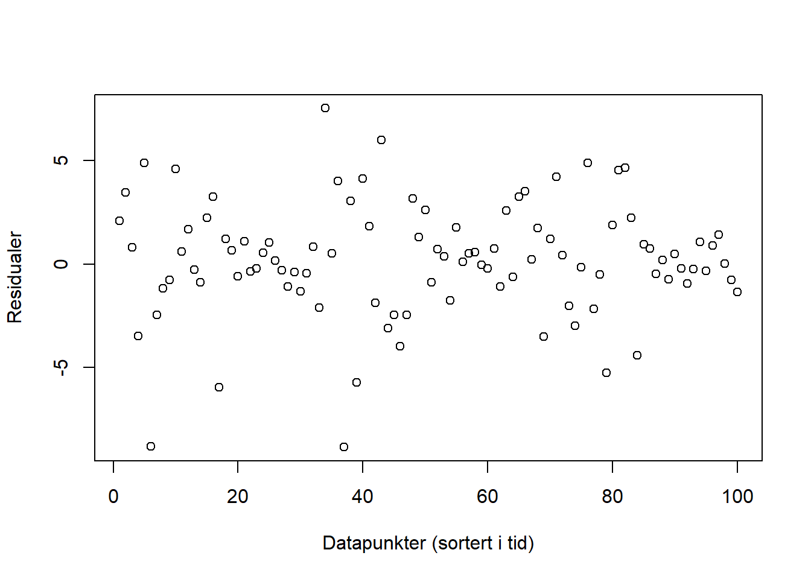
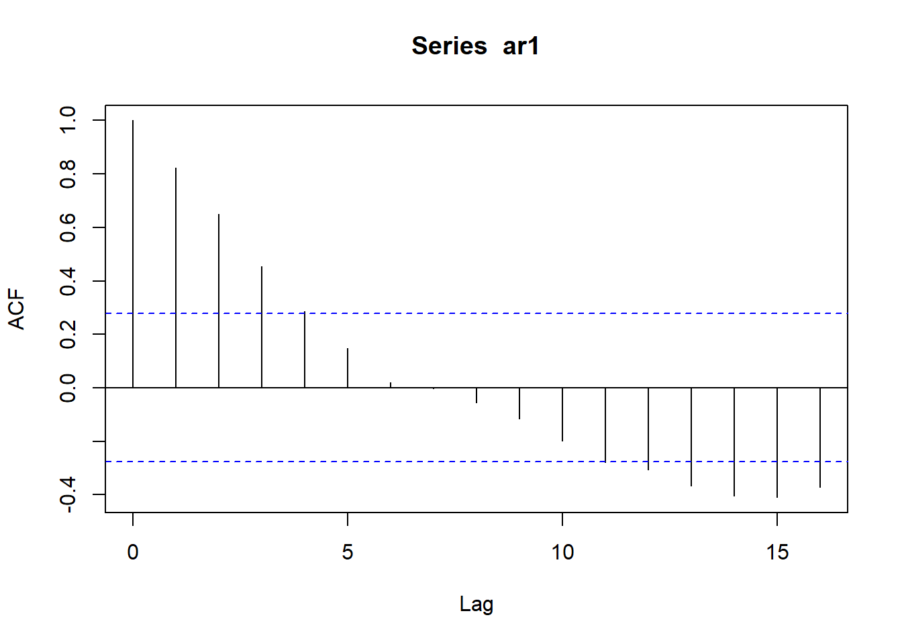
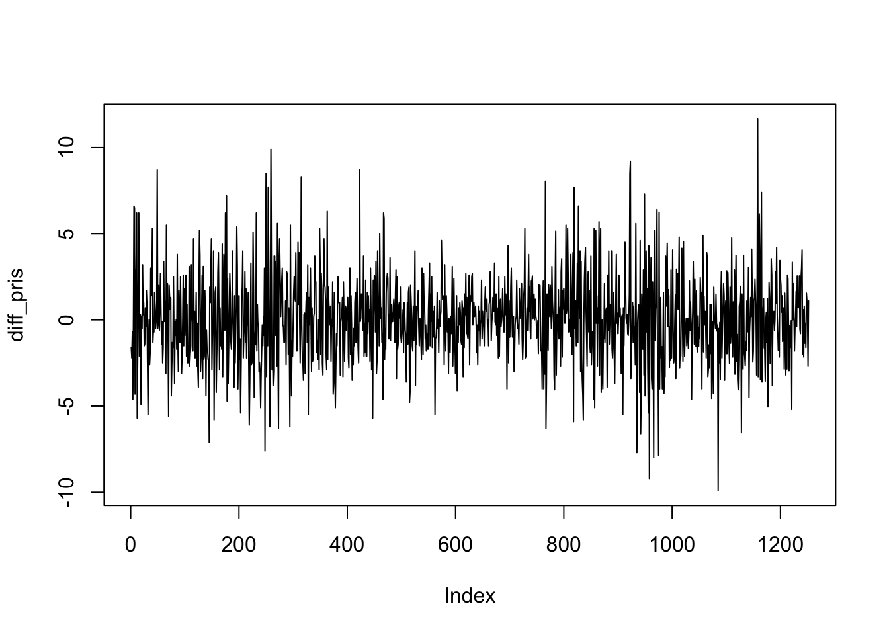

6.5 Autokorrelasjon
6.5.1 Kontrollspørsmål/Diskusjonsspørsmål
- Formuler med egne ord: Hva er autokorrelasjon?
- Hva kan vi lære ved å se på autokorrelasjonsplottet til en tidsrekke?
- Kan du komme på noe vi ikke kan finne ut av ved å se på korrelasjoneplottet til en tidsrekke?
6.5.2 R-øving
1. Utregning av ACF I R bruker vi funsksjonen acf() til å lage autokorrelasjonsplott. La oss i første omgang gjenskape noen av figurene fra videoen ved hjelp av simuleringer. For eksempel kan vi laget til to tidsrekker som på forrige oppgavesett, en hvit støy og en AR(1):
n <- 50
hvit_støy <- rnorm(n)
ar1 <- arima.sim(model = list(ar = 0.95), n)Autokorrelasjonsplottene til disse to tidsrekkene kan vi få frem ved å anvende acf()-funksjonen på dem:
acf(hvit_støy)
acf(ar1)
Vi ser igjen mønsteret fra videoen: Hvit støy består av ukorrelerte observasjoner, mens AR(1)-modellen består av observasjoner som bygger på forrige observasjon, slik at det er en viss korrelasjon, og dermed avhengighet fra dag til dag. Det ser vi igjen i autokorrelasjonsplottet som gir tydelig utslag, og der korrelasjonen går gradvis mot null med økende avstand mellom observasjonene.
2. ACF som sjekk av modell En sjekk vi gjerne gjør for å se om en estimert tidsrekkemodell passer dataene våre, er å se autokorrelasjonen til residualene i modellen er liten. Det betyr nemlig at modellen plukker opp den (lineære) avhengigheten i tidsrekken. For en AR(1) modell er residualene f.eks gitt ved \(\hat{u}_t = Y_t - \hat{\phi}Y_{t-1}\), men disse er tilgjengelig direkte fra modell estimeringen i R:
library(forecast)
ar1_estimat <- Arima(ar1, order = c(1, 0, 0))
acf(ar1_estimat$residuals)
3. Oppgave: Prøv nå lage et plott av følgende tre tidsrekker, plott autokorrelasjonsfunksjonen, og knytt en kort kommentar til hver av dem om hva du lærer om tidsrekken ved å se på autokorrelasjonsplottet til:
- Prisen på Equinor-aksjen, som vi jobbet med i det første oppgavesettet.
- Equinoraksjens prosentvise avkastning (som er tilnærmet lik
diff(log(pris))) fra dag til dag. - Tidsrekken som er igjen etter at du fjernet trend og sesong fra ølproduksjonstidsrekken i det andre oppgavesettet.
Til slutt: husk at også autokorrelasjonsplottene må pyntes og ordnes på hvis vi skal vise dem til andre i rapporter, innleveringer etc. Du kan stort sett bruke de samme argumetene som i vanlige plott: xlab =, ylab =, main = osv.